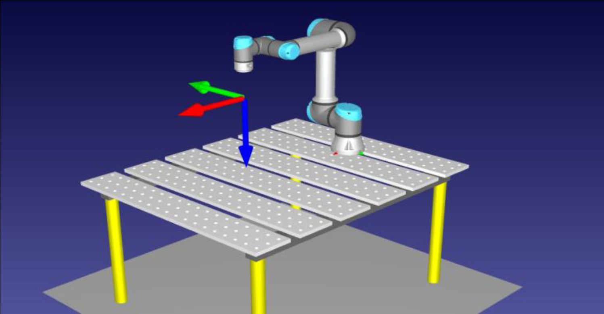
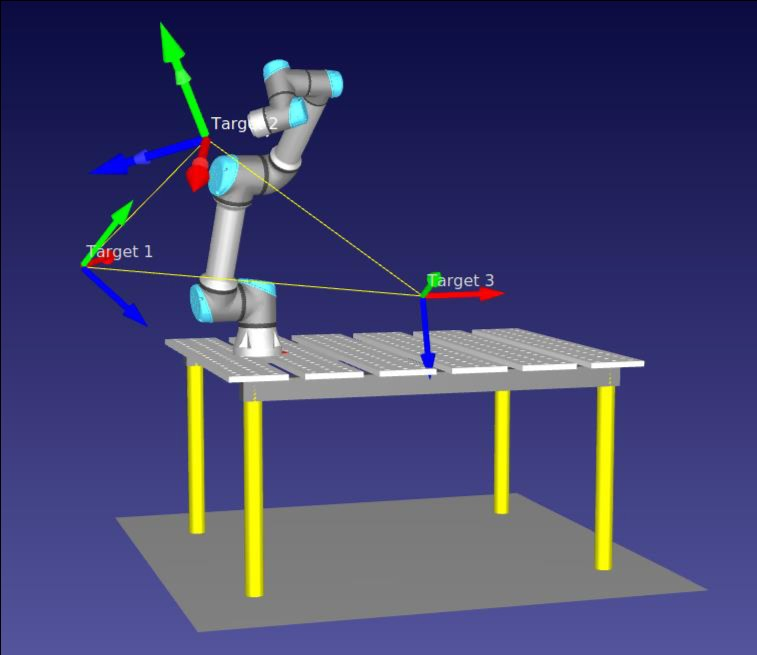
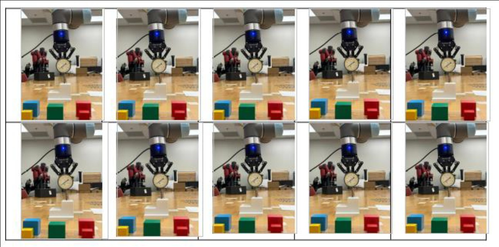
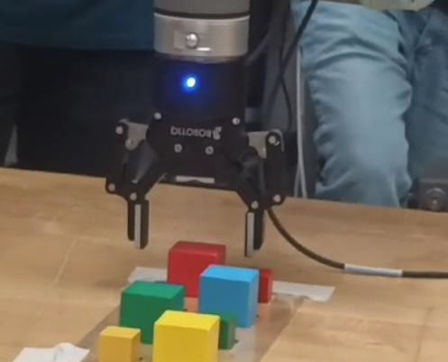
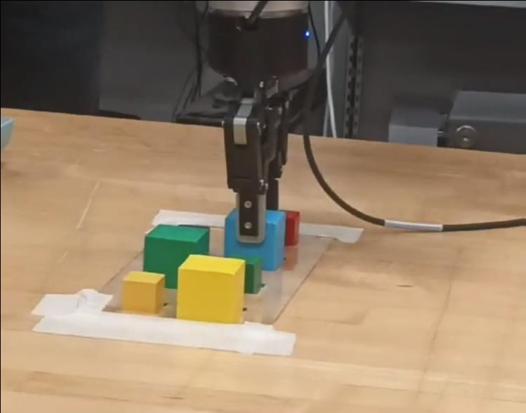
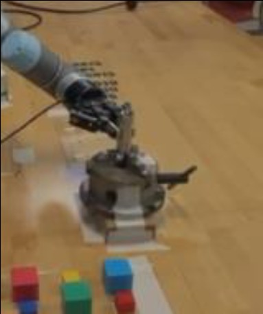
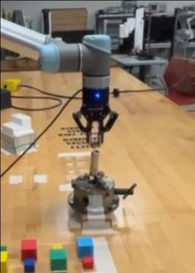
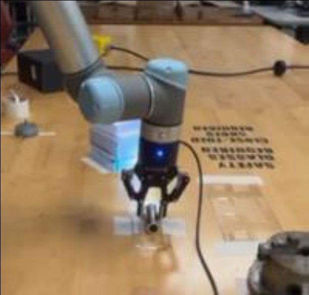

One UR5, Three Languages, and a Flashlight That Screws Itself Together
Hands-on mastery of an industrial cobot across every layer of its programming stack: PolyScope waypoints on the teach pendant, offline path planning and simulation in RoboDK, and raw URScript on the controller. Validated by tracing all eight vertices of a virtual cube with linear moves, quantifying gripper repeatability with a dial indicator, running pallet-to-pallet pick-and-place with a ROBOTIQ adaptive gripper, and finishing with a full flashlight assembly — fastened by torque feedback, not hope.
Same arm, three ways to talk to it.
The point of this project wasn't one demo — it was fluency. Every task was approached through the UR5's full programming stack: PolyScope on the teach pendant for real-time waypoint control, RoboDK for offline simulation and path planning against a modeled table station, and URScript for text-level programs running directly on the controller — including gripper primitives like rq_close_and_wait() and torque telemetry via get_joint_torques(). Each environment executed the same waypoint missions, so their trade-offs showed up in practice, not in a datasheet.
| Feature | PolyScope | RoboDK | URScript |
|---|---|---|---|
| Interface | pendant GUI | simulation + GUI | text |
| Learning curve | low | medium | high |
| Control level | high-level | high-level + detail | fine-grained |
| Simulation | basic built-in | full offline | none |
| Best for | bring-up, teaching | path planning | custom algorithms |
RoboDK: crash in software, deploy with confidence.
The UR5 model was imported into RoboDK with its table station, three targets were recorded, and the program linked them with linear joint-space moves. Only after the simulated run was verified did the same program go to the physical robot — the same three poses were also driven through PolyScope in both joint space (per-joint angles, fine control) and Cartesian space (pose targets, simpler paths), making the coordinate-system trade-off concrete.


| Pose | X (mm) | Y (mm) | Z (mm) | RX·RY·RZ (rad) |
|---|---|---|---|---|
| Pose 1 | −575 | −350 | 300 | 2.10 · 1.11 · 0.63 |
| Pose 2 | −240 | −445 | 650 | 1.57 · −1.57 · −1.57 |
| Pose 3 | 400 | −400 | 200 | 2.79 · −0.16 · 0 |
The three PolyScope waypoints, driven in both joint and Cartesian space.
Draw a cube in thin air. Then measure it.
The capstone of the motion work: trace all 8 vertices of a virtual cube hanging in the workspace. One moveJ gets the arm to the first corner; every subsequent edge is a moveL, forcing straight Cartesian lines rather than joint-space arcs. The recorded waypoints then let the cube be measured from its own trajectory — the diagonal between corner points recovers the side length:
V = d³ ≈ 1.80 × 10⁶ mm³ // the cube the arm drew, computed from its own waypoints
Trust, but verify with a dial indicator.
Before asking the arm to assemble anything, its precision was measured. A digital pressure indicator was mounted perpendicular to a 3D-printed block, and the robot traced the block's edge between waypoints — then its full face through four corner waypoints — over 10 iterations, recording the indicator at each pass. The UR5 held its line: the only visible variation came from the print surface itself, not the robot.

Calibrated force, transformed frames, undamaged blocks.
The ROBOTIQ adaptive gripper work went from manual open/close on the pendant to scripted control, with grip force calibrated in newtons against a load cell across speed and force settings. The pick-and-place program then transferred blocks pallet-to-pallet using coordinate transformations from the robot base frame to each pallet, with positions held in variables so the pallets could move without rewriting the program. A precision epilogue: inserting and removing a 10 mm dowel pin through a sequence of different-sized holes in a mating plate.


Screw until the joints say 3 N·m.
The final task assembled a working flashlight: head clamped in a pneumatic chuck via Digital I/O, barrel threaded on until joint torque readings from get_joint_torques() hit 3 N·m, battery pack inserted with correct polarity, and the tail cap tightened to its own 2 N·m spec before unclamping. Fastening by torque feedback instead of position means the thread decides when it's seated — the robot just listens.
| Step | Action | Control signal |
|---|---|---|
| Clamp head | place into pneumatic chuck | Digital I/O |
| Thread barrel | screw onto head | torque → 3 N·m |
| Insert battery | into barrel, correct polarity | pose sequence |
| Thread tail cap | align and screw | torque → 2 N·m |
| Release | unclamp, place in tray | Digital I/O |



What this project proves.
Environments are tools, not identities. PolyScope got the arm moving in minutes, RoboDK caught path problems before they cost hardware time, and URScript did what no GUI could — read joint torques mid-motion and use them as a stop condition. Knowing when to drop a layer is the actual skill. moveJ and moveL are different promises: one guarantees where the joints end up, the other guarantees the path between — the cube trace only measures correctly because every edge kept the second promise. And force is a sensor: the flashlight threads seated by listening to torque, which is the difference between assembly and cross-threading with confidence.